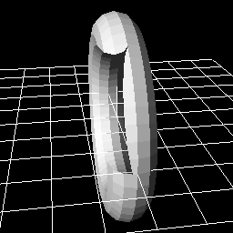

11. Let's use 3D model!!¶
Overview¶
In this chapter, we create an effect with a 3D model. In Effekseer, 3D models can be shown as particles, or it can be used as a spawning position in Spawning method. We create effects with these functions.
The effect No.1 created in this chapter
The effect No.2 created in this chapter
3D model¶
Effekseer can read the 3D model of fbx or mqo. fbx is a format that can be exported from various 3D software such as Blender, Maya, 3ds Max and so on. mqo is a format that can be exported from Metasequoia.
Also supports fbx with animation.
There are two uses.
The first method is to display the 3D model as particles.
Model
The second method is to display the 3D model as the spawning position of Spawning method.
Spawning method
This chapter explains how to use them.
We made it possible to download the effect created in advance from the link below.
Show 3D model as particles¶
We show a model as particles.
Please open effect1.efkefc.
Just like Sprite, select Model as rendering method in Rendering Settings panel.
Then we load Model/Sphere.fbx as a model.
You can see that the loaded 3D model is shown.
If an opaque object is rendered, there is no problem with this, but there are times when you want to light them up.
In such a case, change the material into Lighting from Basic Render Settings panel.
| Window | Value type | Value |
|---|---|---|
| Render Settings | Render method | Model |
| Render Settings | Model/Sphere.mqo | |
| Render Settings | Culling | Double-sided |
| Basic Render Settings | Material | Lighting |
Model
There are times when you want to put out effects along the shape of the model.
Let's specify the image and we also specify Scroll for UV.
The parameters are as follows.
| Window | Value type | Value |
|---|---|---|
| Render Settings | Render method | Model |
| Render Settings | Model/Sphere.mqo | |
| Render Settings | Culling | Double-sided |
| Basic Render Settings | Material | Lighting |
| Basic Render Settings | Blend | Additive |
| Basic Render Settings | Texture | Texture/Aurora.png |
| Basic Render Settings | UV | Scroll |
| Basic Render Settings | Size(Mean) | 1024,1024 |
| Basic Render Settings | Scroll Speed(Mean) | 0,-8 |
Then you can see that the effect flows along the shape of the model.

Rendering is sometimes wrong in the depth direction depending on a model.
To solve this problem, turn Z Set on.
Not limited to Effekseer, 3D rendering has a function to judge before and after.
When Z Set is off, other objects are rendered as if the 3D model was not drawn.
Therefore, the depth may be wrong.
If Z Set is changed to On, you can see that it is correctly displayed including the depth.
|

Z Set:Off |

Z Set:On |
Use 3D model as position of Spawning method.¶
Besides showing the model, it can be used as the position of spawning method.
You can generate particles at the vertices or faces of the model.
Let's try it.
Please open effect2.efkefc.
Specify the model to spawning method. Then load Model/Sphere.mqo as a model.
For clarity, make Spawn Mode Vertex.
Specify Particle.png for particle's image.
We also increase Spawn Count.
The parameters are as follows.
| Window | Value type | Value |
|---|---|---|
| Common | Spawn Count | 90 |
| Spawning method | Spawning method | Model |
| Spawning method | Model/Sphere.mqo | |
| Spawning method | Spwan Mode | Vertex |
You can see that particles are placed along the model.

It can also be combined with ribbons and tracks. In that case, ribbons and tracks are generated along the vertices of the model.
Finally, I made it possible to download the effect created in this chapter.
Summary¶
In this chapter, we created an effect with 3D Model. In the next chapter, we will use the F-Curve to specify complicated movements.